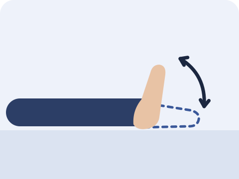

打球落地時踩到別人的腳，或行山時踏空，腳踝一扭便腫起來？本文講解扭傷後的處理方法。
重點腳踝扭傷最常見的是外側韌帶受傷。如受傷後無法自行步行四步，或腳踝、腳掌某些骨頭位置有明顯按痛，應先求醫，檢查是否骨折。研究支持在可承受的範圍內及早活動，並以運動訓練幫助腳踝回復穩定；平衡訓練及護踝亦有助減少再次扭傷。
首先：排除骨折
扭傷後，首要是排除骨折。醫生常用「渥太華腳踝規則」（Ottawa ankle rules）判斷是否需要照 X 光。研究指出，這套規則能準確排除腳踝及腳掌中段的骨折，並減少不必要的 X 光檢查。
以下情況請先求醫
- 受傷後及求醫時，均無法自行步行四步
- 腳踝內側或外側骨頭的後緣或尖端有明顯按痛
- 腳掌外側中段（第五蹠骨底部）或腳掌內側（舟骨）有明顯按痛
- 腳部麻痺、變色或變冷
扭傷後的首數天
研究支持及早活動：在痛楚可承受的範圍內，盡早開始步行及活動腳踝。
受傷後應及早求醫評估。由於初期腫脹及疼痛較明顯，醫護人員或會於數天後再作檢查，以更準確判斷韌帶受傷的程度。
扭傷後的重點，在於重新訓練腳踝的穩定及平衡。
指引建議以運動訓練為主；相比只接受被動治療，更能幫助腳踝回復穩定。
三個腳踝復康動作
在痛楚可承受的範圍內開始，由淺入深。以下次數僅為起步建議。

踝泵運動
坐下或躺下，腳伸直，將腳尖慢慢向上勾起，再慢慢向下踩，猶如踩油門。
20 次｜2–3 組

提踵
扶著牆或椅背，慢慢踮起腳尖，再慢慢放下。
10 次｜2–3 組

單腳站立
扶著牆或椅背，以受傷的一隻腳單腳站立；站穩後，可嘗試放開手。
30 秒｜重複 3 次
進行時請注意
- 在痛楚可承受的範圍內進行，動作宜慢。
- 單腳站立時，身旁應有可扶持之處。
- 恢復打球或行山前，先確定能單腳站穩、踮腳及慢跑，而沒有明顯痛楚。
常見問題
扭傷後可以步行嗎？
如能承重，研究支持在痛楚可承受的範圍內及早活動。如無法自行步行四步，請先求醫檢查。
為甚麼會反覆扭傷腳踝？
腳踝扭傷後，再次扭傷的風險較高。研究指出，平衡訓練及護踝有助減少再次扭傷。
需要佩戴護踝嗎？
研究指出護踝有助預防再次扭傷。是否需要佩戴及佩戴多久，可諮詢物理治療師。
參考資料
- Vuurberg G, et al. Diagnosis, treatment and prevention of ankle sprains: update of an evidence-based clinical guideline. Br J Sports Med 2018;52(15):956. PubMed
- Doherty C, et al. Treatment and prevention of acute and recurrent ankle sprain: an overview of systematic reviews with meta-analysis. Br J Sports Med 2017;51(2):113–125. PubMed
- Bachmann LM, et al. Accuracy of Ottawa ankle rules to exclude fractures of the ankle and mid-foot: systematic review. BMJ 2003;326(7386):417. PubMed

高浩維 Anson Ko
註冊物理治療師，於尖沙咀 Amazing Medical 應診。關於我
本文只供一般參考，不能取代專業診斷及治療。如症狀持續或出現警號，請諮詢醫生或物理治療師。